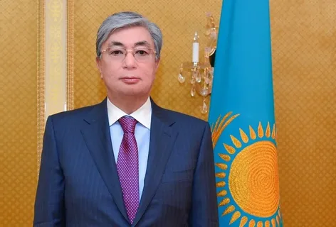

- Моя страница
- Новости
- Сообщения
- Друзья
- Группы
- Фотографии
- Музыка
- Видео

Abylai
Kenesary
Shokhan
Bokeikhan
Nursultan
 Yeldos
Yeldos
Қасым-Жомарт Кемелұлы Тоқаев
Қазақ елі үшін қызмет етеміз !
Қызметте
День рождения:
Город:
Семейное положение:
Место работы:
Веб-сайт:
17 мамыр 1953 жылы
Алматы
Разведен
Қазақстан Республикасының Президенті.
19 000 000друг
224подписчика
95Фотографии
972видеозаписей
809аудиозаписей
140страниц
Мои Фотографии 32
Қасым-Жомарт Кемелұлы Тоқаев
9 марта в 21:32
Касы́м-Жома́рт Кеме́левич Тока́ев (каз. Қасым-Жомарт Кемелұлы
Тоқаев; Qasym-Jomart Kemelūly Toqaev; род. 17 мая 1953,
Алма-Ата, Казахская ССР, СССР) — казахстанский государственный и
политический деятель. Действующий президент Республики Казахстан и
верховный главнокомандующий вооружёнными силами Республики Казахстан с
20 марта 2019 года[1]. Председатель Совета безопасности Республики Казахстан с
5 января 2022 года. Председатель Ассамблеи народа Казахстана с 28 апреля 2021
года[2]. Председатель партии «Аманат» с 28 января по 26 апреля 2022 года.
Председатель Сената парламента Республики Казахстан с 16 октября 2013 года по 20 марта 2019 года. Генеральный директор отделения ООН в Женеве с 12 марта 2011 года по 16 октября 2013 года. Премьер-министр Республики Казахстан (октябрь 1999 — январь 2002). Министр иностранных дел Республики Казахстан (1994—1999, январь 2002 — январь 2007). Чрезвычайный и полномочный посол. Доктор политических наук.
9 июня 2019 года победил на внеочередных президентских выборах, набрав 70,96 % голосов[3][4]. 20 ноября 2022 года Токаев победил на выборах с результатом 81,31 %[5].
Председатель Сената парламента Республики Казахстан с 16 октября 2013 года по 20 марта 2019 года. Генеральный директор отделения ООН в Женеве с 12 марта 2011 года по 16 октября 2013 года. Премьер-министр Республики Казахстан (октябрь 1999 — январь 2002). Министр иностранных дел Республики Казахстан (1994—1999, январь 2002 — январь 2007). Чрезвычайный и полномочный посол. Доктор политических наук.
9 июня 2019 года победил на внеочередных президентских выборах, набрав 70,96 % голосов[3][4]. 20 ноября 2022 года Токаев победил на выборах с результатом 81,31 %[5].